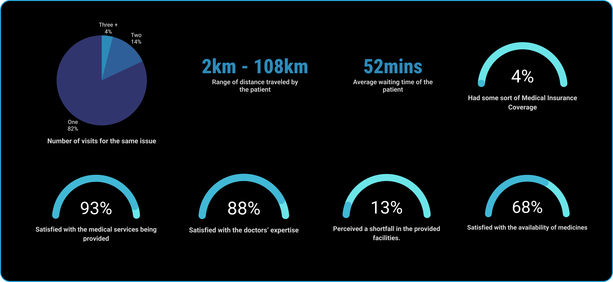
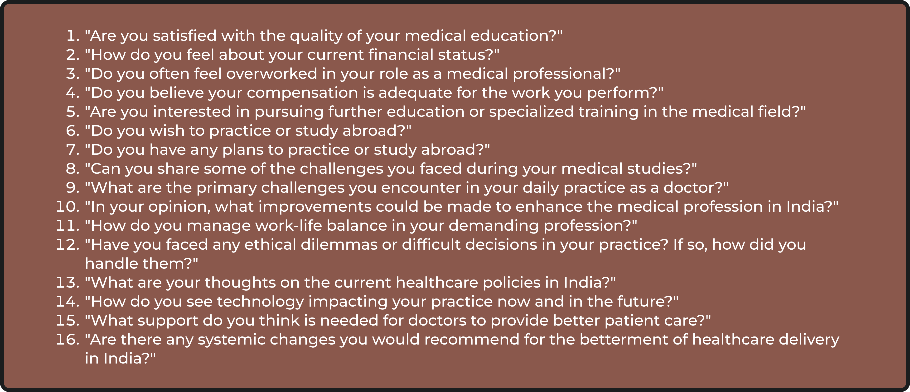
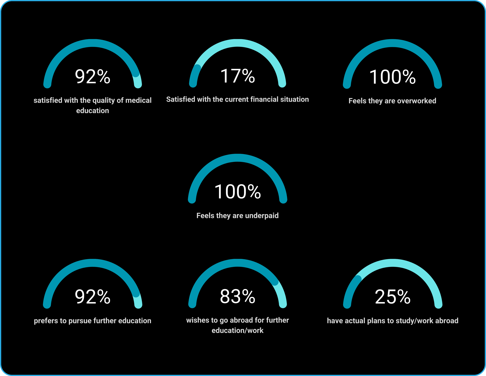

WE ARE FRUSTRATED!!
Dr. Treesa and I conducted interviews with around 50 patients to better understand the challenges they faced.
Following were some of the questions we asked.
Summarizing the results briefly

Some of the problems that was identified that often gets overlooked:
DIVING DEEPER
Problem #1
"It is so crowded and we have to wait a long time to see our doctor"
Every participant expressed concern over the same issue. As these are government-run hospitals without corporate involvement or digital integration, there's no system for booking appointments or managing crowds. The inadequate waiting space complicates matters for patients, making waiting uncomfortable. The situation is further aggravated by the challenging weather conditions. This issue is particularly distressing for patients from lower socio-economic backgrounds who rely on daily earnings; every minute spent waiting at the hospital impacts their income. In our survey with patients, the average waiting time was found to be 52 minutes. Furthermore, with only 9.1 doctors per 10,000 people, the capacity to meet patient demand is severely constrained.
Most of the individuals we interviewed were daily wage workers accessing the healthcare system, who cannot afford to spend excessive time in hospitals as it directly affects their wages. From the hospital's standpoint, addressing these problems is a significant challenge. Improving patient management would necessitate hiring more staff and expanding waiting areas, which is not expected to happen soon. A potential improvement could be the digitization of appointment systems and assigning specific time slots to patients. However, this solution faces obstacles due to the overwhelming patient load and the insufficient number of doctors and staff. Despite these challenges, we believe that incorporating more technological solutions could lead to significant improvements.
Problem #2
"It is so confusing where to go and which doctor to consult"
Many patients voiced confusion regarding navigation within hospital premises. This is exacerbated by the hospitals' typically complex, maze-like layouts, with interconnected hallways and multiple floors, making it difficult to find specific departments or doctors. A survey by the Agency for Healthcare Research and Quality revealed that nearly one-third of first-time visitors to large hospital complexes struggle to locate their destinations, highlighting a widespread issue.
Lack of clear and effective signage contributes significantly to this confusion. In many cases, signage is either non-existent or poorly placed, failing to adequately guide patients and visitors, especially in emergencies. Illiterate patients find it particularly challenging to read name boards, and being unfamiliar with medical terms related to diseases and tests, they also face difficulties in asking for directions. Language and accessibility barriers further complicate navigation for patients with diverse backgrounds and specific accessibility needs.
To improve navigation, experts recommend clear signage with legible fonts and universally understood symbols, architectural cues like distinct visual landmarks, and a user-centered design approach. Incorporating technology, such as mobile apps with indoor maps and real-time directions, QR codes, and augmented reality, can further enhance the patient experience. Additionally, the establishment of a general helpdesk for inquiries, a feature commonly found in private hospitals but lacking in government-run facilities, could significantly streamline the process and reduce patient anxiety. These measures not only reduce patient anxiety but also improve operational efficiency by minimizing the need for staff to constantly provide directions.
Problem #3
"Private hospitals are very costly and the diagnostic tests are unaffordable"
The high costs in private hospitals in India can largely be attributed to their nature as profit-driven entities. Since private hospitals are owned by private entities, their primary objective is to make a profit, which often results in higher treatment and service costs compared to public hospitals. This situation highlights the urgent need for improvements in the public healthcare system.
There is a common perception that private hospitals generally offer better facilities, and this is often the case. However, people from poor socio-economic backgrounds find it very hard to access these facilities due to the cost. For major treatments, unless the patient is doing well financially or has insurance, it becomes nearly impossible to afford treatment. This is particularly troubling considering that only 4% of patients we interviewed had some form of health insurance, underscoring the accessibility barrier posed by high costs.
It's crucial to recognize that some of India's best doctors work within the public healthcare system. This represents an opportunity to leverage the expertise available in public hospitals to enhance the overall quality of healthcare in the country.
Improving public healthcare facilities could offer a more affordable and accessible alternative to private hospitals, especially for those who cannot afford the high costs of private healthcare. The expertise of top doctors in the public sector, combined with improved infrastructure and resources, could significantly enhance the public healthcare services' effectiveness and appeal.
Efforts to strengthen the public healthcare system should focus on addressing issues such as staff shortages, outdated equipment, and long waiting times. Additionally, increasing transparency in healthcare costs and ensuring fair pricing practices are essential steps towards making healthcare more accessible and affordable for all.
Problem #4
"We do not get most of the medicines that doctor prescribes to us"
This issue wasn't a major concern for the patients we interviewed, despite widespread media coverage about doctors prescribing hard-to-get medicines. Most of the medicines prescribed were generic and readily available in hospitals. However, discussions with the pharmacy assistant at Govt Medical College Ernakulam indicated occasional shortages due to factors like short shelf life or specific storage conditions, such as the need for refrigeration, which can be costly.
An effective strategy could involve stocking medicines targeting prevalent diseases in specific regions. The challenge, however, lies in the lack of data collection, making it difficult to implement this approach. Additionally, broader factors like transportation, costs, and health literacy significantly impact patients' ability to access prescribed medicines.
Problem #5
"So much delay in getting the lab reports"
In India's public healthcare system, the delays in receiving laboratory reports are a pressing issue, primarily caused by limited equipment and manpower in labs, and a high volume of patients. Furthermore, the need to prioritize surgeries and emergencies often results in extended waiting times for routine lab results. To tackle these challenges, a multi-faceted approach is necessary.
A key strategy is the implementation of structured processes for lab result validation and documentation. This approach, as demonstrated successfully in New Delhi, can lead to a significant reduction in delays.
Resource optimization is also crucial. Upgrading laboratory infrastructure and increasing the workforce can help in efficiently managing the high volume of tests.
Integrating advanced technology, such as electronic health records and automated notification systems, can streamline the management of test results, ensuring quicker turnaround times.
Regular process improvements in laboratory procedures, including sample collection, testing, and reporting, are essential to identify and rectify bottlenecks.
Providing continuous training and support to healthcare staff can enhance their ability to handle high workloads without sacrificing quality.
Effective policy and management changes are needed to balance the urgent requirements of emergency cases with those of routine tests, thereby improving overall efficiency.
Lastly, public-private partnerships can bring in additional resources and expertise, contributing significantly to the improvement of service delivery in public healthcare.
By employing these strategies, the Indian public healthcare system can aim to provide more efficient and timely laboratory services, ultimately enhancing patient care and patient satisfaction.
Problem #6
"No discharge summary or treatment data for future reference"
The issue of inadequate discharge summaries and treatment data in the Indian public healthcare system is compounded by current systemic limitations. Most data is not systematically collected or stored, and in critical cases, discharge summaries are often handwritten by junior doctors, potentially leading to the omission of important details.
Integrating this with findings from a study conducted in Himachal Pradesh and Kerala, it becomes evident that the lack of structured and comprehensive discharge information can severely impact patient care. This is particularly risky in scenarios where patients return for the same or a different disease, and doctors have no previous context to rely upon. Patients, especially those not medically trained, might unintentionally omit crucial details, potentially endangering their lives.
The study found that poor discharge communication is associated with negative health outcomes, including increased mortality and worsening of chronic conditions. Less than a quarter of patients received lifestyle advice, and only 31% of discharge notes contained all necessary details for continuity of care. Such deficiencies highlight the urgent need for improvements in discharge communication practices.
The need for digitization in the Indian healthcare system is paramount in addressing these issues. The Ayushman Bharat Digital Mission (ABDM) and the introduction of the Unified Health ID are significant steps towards this goal. The ABDM aims to create a digital health ecosystem that supports the online availability of health data, which, if implemented effectively, could revolutionize the continuity of care. The Unified Health ID allows for the integration of medical records across platforms and institutions, ensuring that a patient's health history is accessible whenever and wherever needed, thus greatly enhancing the quality and efficiency of healthcare delivery.
Implementing electronic health records (EHRs) under the framework of ABDM can provide several benefits:
- Accurate and Comprehensive Data Collection: EHRs facilitate the systematic recording of patient data, including diagnosis, treatment, and follow-up care.
- Continuity of Care: Digital records enable healthcare providers to access a patient's history, ensuring informed decision-making for ongoing and future treatments.
- Reduced Risk of Errors: Digitization minimizes human errors associated with handwritten notes and improves the overall quality of discharge summaries.
- Enhanced Patient Safety: Accurate and accessible patient data lead to better treatment outcomes and patient safety.
- Efficient Healthcare Delivery: EHRs streamline various processes, making healthcare delivery more efficient and reducing the burden on healthcare professionals.
To effectively address these issues, a concerted effort is required to upgrade the existing healthcare infrastructure, invest in digital technologies, and train healthcare professionals in using these systems. This shift towards digital health records, combined with the ABDM's initiatives like the Unified Health ID, and improved communication and documentation practices, is crucial for enhancing patient care and safety in the Indian public healthcare system.
Problem #7
"Doctors are sometimes insensitive to our concerns. We are just another medical case. There is no concept of individual care"
The concern about doctors sometimes being insensitive to patient needs, treating them as just another medical case, and not providing individualized care, is a significant issue in the healthcare system in India. A poignant anecdote from Dr. Vipin of the Government Medical College Alappuzha illustrates this challenge. He describes a day when he encountered three deaths due to a road accident during his tenure as a house surgeon, which had desensitized him to such gory scenes. Later that day, when treating a patient with a severely injured leg, Dr. Vipin's routine approach provoked the patient's bystander, who accused him of insensitivity. This incident highlights the difficult balance that doctors must maintain between professional detachment and emotional response.
In medical colleges, where the primary focus is often on learning and handling cases, personal relationships with patients can sometimes take a back seat. However, there is a need for a middle ground approach. Training for doctors that emphasizes empathy and emotional intelligence is crucial in improving the doctor-patient relationship. Such training can help medical professionals understand and manage their emotions while maintaining the necessary detachment. With only 9.1 doctors per 10,000 people, the overload on doctors can lead to physical or mental exhaustion, sometimes causing them to lose their patience or appear insensitive.
Furthermore, protocols like SPIKES, designed to guide healthcare professionals in delivering difficult news to patients, are often only taught theoretically, with no practical training provided. There is a significant need for occasional practical training on being compassionate, empathetic, and maintaining effective communication with patients. Simultaneously, patient education about the challenges doctors face is important. An understanding of the mental and emotional toll on doctors, especially in high-stress environments, can lead to better appreciation and cooperation from patients. By incorporating training in empathy for doctors, practical application of communication protocols like SPIKES, and educating patients on the realities of medical practice, the healthcare system can foster more compassionate and effective healthcare.
Problem #8
"We have no idea who is treating us"
The concern that patients often do not know who is treating them in hospitals highlights a larger issue in healthcare communication and patient care management. This problem is particularly pronounced in busy hospital environments where patients may interact with a variety of healthcare professionals, each with their own distinct roles and responsibilities. This multiplicity of caregivers can make patients feel lost in the system, undermining their sense of individualized care.
Effective communication is crucial in mitigating this issue. Healthcare professionals require comprehensive training in communication skills, focusing on clear, empathetic interactions with patients. This training should underline the importance of healthcare providers introducing themselves and explaining their role in the patient's care, fostering trust and ensuring that patients are better informed about their treatment journey. Additionally, the implementation of digital displays or some form of display in hospitals could significantly improve patient experience by providing real-time information about the availability of doctors and their timings. Many patients have expressed frustration over traveling long distances to the hospital, only to find out that the doctor they wanted to see was not available. An online facility for checking doctor availability and scheduling appointments would be an ideal solution, although its feasibility needs careful consideration.
Furthermore, the organization of care in hospitals, which often involves managing multiple patients simultaneously, can lead to brief and impersonal interactions. To counter this, healthcare systems need to explore ways to optimize patient-to-doctor ratios and workflows, enabling more personalized care without compromising the quality of medical treatment.
Patient education about the hospital care process is also essential. Informing patients about the typical structure of hospital teams and the roles of various healthcare professionals can set more realistic expectations and reduce feelings of anonymity and confusion.
Improvements in the doctor-patient relationship and communication within healthcare settings are imperative for addressing the concerns of patients feeling disconnected from their caregivers. While systemic changes in healthcare delivery and staffing may be necessary to fully resolve these issues, individual healthcare providers can make significant contributions by prioritizing and improving communication with their patients.
Problem #9
"It is dirty and unhygienic here"
Hygiene challenges in public hospitals are a matter of significant concern, arising from a variety of systemic factors. A fundamental issue is the shortage of maintenance staff, which severely impacts the ability to maintain cleanliness. This is often exacerbated by overcrowding, as a high volume of patients and visitors overburden hospital facilities, leading to rapid deterioration in hygiene standards. A lack of public awareness and adherence to proper hygiene practices further aggravates the situation.
Another critical issue is the inadequacy of waste management systems. Many hospitals face challenges with efficient waste disposal and treatment, partly due to infrastructural constraints that impede effective waste management. This problem is particularly acute in common areas and wards, in contrast to the higher levels of cleanliness maintained in more critical areas like operation theatres and laboratories.
Addressing these challenges requires a comprehensive approach. This includes upgrading waste disposal technologies, providing extensive training for staff in hygiene and sanitation practices, and implementing stringent cleanliness protocols. The selection and use of cleaning and disinfecting products are also key, requiring a balance between effectiveness, safety, and environmental impact.
The training and empowerment of environmental hygiene personnel are essential. Their role is critical, and improving their training, certification, and clarity of responsibilities can significantly enhance cleaning standards. Effective coordination among staff and clear task allocation are vital for maintaining high hygiene standards.
Furthermore, community engagement and education on hygiene practices are crucial for cultivating a culture of cleanliness and responsibility. Supporting Infection Prevention and Control (IPC) programs and establishing international partnerships for WASH assessments in healthcare facilities can lead to substantial improvements in public hospital hygiene standards.
Problem #10
"Hospital beds are not available at all. Sometimes we are asked to sleep on the floor, which feels very unhygienic"
The acute shortage of hospital beds in India is a critical issue, significantly impacting patient care and safety. The scarcity is so severe that patients are sometimes compelled to sleep on the floor, raising serious concerns about hygiene and the risk of infection. This problem is a stark indicator of the broader challenges facing the country's healthcare infrastructure.
One of the root causes of this dire situation is the inadequate healthcare spending by the government. Currently, India allocates only 2.1% of its GDP to healthcare, positioning it at 178th globally in terms of healthcare expenditure as a percentage of GDP. This level of investment is abysmal and insufficient to meet the vast needs of its population, leading to overstretched facilities and a critical shortage of essential resources like hospital beds.
Statistically, India has only 8.5 hospital beds per 10,000 people, a figure that falls significantly short of the global average and is insufficient for a country with such a vast population. This shortage is not merely a matter of numbers; it reflects a systemic issue that affects the quality of patient care, leading to compromised treatment outcomes and patient dissatisfaction.
To address these challenges, there is an urgent need for increased healthcare expenditure to improve the infrastructure of hospitals. Investing in healthcare is not just about increasing the number of beds; it involves enhancing the overall quality of healthcare facilities, ensuring the availability of medical supplies, improving sanitation, and expanding the healthcare workforce. Such comprehensive improvements are essential for creating a more resilient and patient-centric healthcare system that can adequately meet the needs of India's population.
LET US LISTEN TO THE OTHER SIDE
Dr. Treesa and I conducted interviews with 12 doctors to better understand the challenges they faced.
Following were some of the questions we asked.

Summarizing the results briefly

Let's examine some of the specific concerns that were highlighted.
Some of the problems that was identified that often gets overlooked:
DIVING DEEPER
Problem #1
"We feel like we are severely overworked and underpaid. Also, Huge mental stress and there is no concept of rest or proper sleep or Paid Time Off"
Healthcare workers in India, particularly during the COVID-19 pandemic, have faced severe overwork and underpayment. Contractual employment with limited rights, including lack of proper salaries and leave, has become the norm in many healthcare institutions. This 'use and throw' policy disregards the need for permanent appointments despite the evident human resource shortage in hospitals.
The disregard for shift timings exacerbates the issue, with doctors often forced to stay back longer than their scheduled hours due to patient overflow. This additional time is not compensated in any form, further contributing to the sense of being undervalued. In our interviews, 100% of doctors expressed that they are overworked and underpaid, highlighting the systemic neglect of healthcare professionals' rights and well-being.
The psychological toll on these professionals is alarming. They endure long working hours, insufficient PPE, and increased clerical responsibilities, leading to significant physical and mental fatigue. Reports suggest a high prevalence of depression and burnout among healthcare workers, particularly junior doctors and medical students.
Amidst these challenges, the need for humane treatment and support for healthcare workers is critical. Their well-being is paramount, and they require adequate insurance coverage, timely pay, and reasonable working hours, along with respect for their shift timings, to effectively combat the pandemic and safeguard their mental health.
Problem #2
"Scared of physical abuse from dissatisfied and angry patients/ bystanders"
Doctors across India have unanimously expressed concerns regarding physical abuse from dissatisfied and angry patients or bystanders. While the emotional distress of patients and their families is understandable, it is important to emphasize that physical assault against healthcare workers is unacceptable. The healthcare staff, already overworked, strive to provide the best care possible under challenging conditions.
A significant number of healthcare professionals, as highlighted by the Indian Medical Association (IMA), have faced violence of some kind in the workplace. Factors contributing to this violence include high medical expenses, inadequate infrastructure, and a general mistrust between doctors and patients. Junior doctors and medical interns are particularly vulnerable, often facing the most violence.
The tragic murder of Dr. Vandana Das in Kottarakkara, Kerala, on 10 May 2023, serves as a harrowing reminder of the dangers faced by healthcare workers. Dr. Das was fatally stabbed while on duty at Kottarakkara Taluk Hospital by an individual suffering from withdrawal paranoia, brought in by the police. This devastating incident has sparked widespread outrage among healthcare professionals in Kerala, leading to demands for stringent legal action to protect healthcare workers from violence.
In response to these challenges, there is a growing consensus on the need to increase security in hospital premises, including a more substantial police presence, enhanced surveillance systems, and other safety measures to protect healthcare workers. Although India recognized violence against healthcare service personnel as a cognizable and non-bailable offense in April 2020, the need for more robust legislation and implementation to safeguard healthcare professionals effectively remains critical.
The solution to this problem requires a comprehensive approach, including improving the healthcare system's responsiveness, enhancing communication skills among medical professionals, and aligning medical treatment with the dignity and expectations of patients. It is crucial to create an environment where healthcare providers can perform their duties without fear of violence, ensuring the well-being and safety of both patients and medical staff.
Problem #3
"Patients never come for follow-up visits"
Our survey, supported by insights from Dr. Sneha of Pariyaram Medical College, underscores a critical challenge in Indian healthcare: the reluctance of most patients to return for follow-up visits. Factors such as the average waiting time of 52 minutes and the long distances traveled, with some patients coming from as far as 108km, significantly deter follow-up visits. The majority of these patients, hailing from impoverished socio-economic backgrounds, are adversely impacted by every minute spent away from work, making follow-up visits a low priority.
To mitigate this, enhancing patient engagement is crucial. Education on the importance of follow-up care is necessary, yet India's diverse cultural and linguistic landscape, coupled with uneven healthcare access and affordability issues, complicates engagement efforts. The financial and logistical barriers that patients face must be addressed to improve adherence to follow-up schedules.
In response to these challenges, the Indian government has initiated several digital health programs aimed at enhancing patient follow-up and treatment adherence. The Ni-kshay app, designed for Tuberculosis patients, serves as a centralized platform for TB case management, enabling healthcare providers to track treatment adherence and patient progress. Similarly, initiatives like the Nikusht app for Leprosy patients aim to replicate this model for leprosy care, facilitating better monitoring and management of the disease. The 99DOTS program is another innovative approach, which utilizes technology to ensure TB patients complete their treatment regimen. Patients receive their medication in blister packs with hidden phone numbers that are revealed only when the medication is dispensed. Patients are then required to call these numbers, providing a simple yet effective way to monitor adherence and support patients through their treatment journey.
Despite the potential of these digital initiatives to transform patient care, their effectiveness is often hampered by implementation challenges, including infrastructure limitations and the need for greater awareness among both healthcare providers and patients. Digital follow-up systems, utilizing mobile technology for reminders, remote monitoring, and scheduling, offer a promising solution to maintain care continuity, particularly for chronic conditions. Enhancing local healthcare services and telemedicine options, alongside reducing direct costs, could significantly increase the rate of follow-up visits, ensuring improved health outcomes and more efficient disease management.
Problem #4
"Sometimes patients go for alternative medicines or no treatment at all"
Patients from poor economic backgrounds or with limited healthcare access often turn to alternative medicines or avoid treatment entirely. This trend is influenced by a combination of factors, including perceived benefits and safety of alternative treatments, dissatisfaction with conventional medicine, and economic considerations.
Cultural beliefs and societal norms also play a crucial role in these healthcare choices. In India, traditional medicine systems are often preferred due to their deep cultural roots. However, this can lead to delayed or inadequate treatment, especially in severe cases, where patients turn to allopathic medicine only as a last resort. Consequently, healthcare providers face challenges in delivering effective care and are often unfairly blamed for poor outcomes.
Addressing this issue requires increasing awareness and education about the importance of timely and appropriate medical care. Additionally, improving access to affordable healthcare and integrating traditional and modern medicine practices could help bridge the gap and ensure better health outcomes for all patients.
Problem #5
"Patients affect the decision making by implying the diagnosis from their own research"
With the advent of the internet, patients increasingly turn to online resources for self-diagnosing health issues before visiting a doctor. This trend of self-diagnosis can significantly influence the medical decision-making process, as patients often arrive with preconceived notions about their condition.
Such self-researched diagnoses can induce diagnostic biases in healthcare professionals, especially when under pressure or fatigue. This can lead to a tunnel vision effect, where doctors might focus more on the conditions suggested by the patient rather than conducting a comprehensive evaluation.
It's crucial to educate both patients and doctors about the biases that self-diagnosis can cause. Patients should be made aware of the limitations and potential inaccuracies of online medical information. At the same time, healthcare professionals should be trained to navigate these biases effectively, ensuring that patient inputs do not unduly sway the diagnostic process. Open communication and guiding patients towards reliable health resources are key to aligning patient expectations with medical realities, thus enhancing the effectiveness of healthcare delivery.
Problem #6
"House-surgency (internship) and first year PG are absolute nightmares, Senior doctors treating us badly and reluctant to break the status quo"
Junior doctors are treated like absolute slaves here. Apart from the exhaustive medical responsibilities, some doctors have reported being assigned menial tasks such as grocery shopping for seniors. This practice not only detracts from their medical training but also indicates a worrying aspect of the professional culture in certain healthcare settings. People are absolutely exhausted all the time, and the risk of making mistakes due to physical exhaustion is alarmingly high. When these issues are raised with senior doctors, the response often reflects an outdated mindset: they endured it, so why can't the juniors?
Recent studies have highlighted the severe psychological impact of such environments on medical professionals. Shockingly, 30% of doctors and medical students report experiencing depression, while 80% express fear of potential burnout. Alarmingly, 18% have had suicidal thoughts, underlining the urgent need for systemic change in the medical training and workplace culture.
The Indian Medical Association Junior Doctors Network (IMA JDN) is aware of these broader challenges, including workplace bullying, long hours, and exploitation. IMA JDN is striving to transform these adversities into opportunities for mentoring and professional growth, focusing on areas like emotional well-being, educational support, and advocating for junior doctors' rights. Addressing the toxic elements of medical culture is critical for the health and well-being of future healthcare professionals.
Problem #7
"We would like to update our knowledge on the field, but just can't"
Young healthcare professionals in India, especially doctors, are often overworked and under significant stress, which impacts their ability to keep up with ongoing learning and Continuing Professional Development (CPD). These young doctors struggle to balance their hectic work schedules with personal commitments, hindering their opportunities for professional growth and learning.
While the awareness and use of e-learning platforms have grown among healthcare workers, challenges such as infrastructure issues and technological barriers make it difficult to utilize these resources effectively. Moreover, many still find traditional classroom training more effective and convenient compared to online learning.
The scope of CPD in the medical field is broad and encompasses various areas including clinical skills, medical knowledge, societal trends impacting patient care, health economics, ethics, and administrative skills. CPD is generally self-directed, requiring doctors to identify their learning gaps and seek relevant education autonomously.
Effective CPD programs are tailored to individual needs and learning styles. They should integrate both formal and informal learning opportunities, encouraging reflection and deliberation on one's own and others' practices. However, the current work conditions, characterized by long hours and high stress, pose significant challenges to doctors in engaging effectively in CPD activities.
In some regions of India, there have been efforts to link CPD with the renewal of medical registration, highlighting the importance of continuous learning in the medical profession. Despite these initiatives, the implementation and impact of CPD requirements vary across states.
Addressing these challenges is crucial for the holistic development of healthcare professionals, ensuring they remain updated with the latest medical advancements and practices, ultimately leading to better patient care.
Problem #8
"Since the advent of superspeciality divisions, we only get petty cases to learn from"
This is a very recent problem. All of the house surgeons and residents learn a lot from the patients being admitted to the hospital. Generally, the higher the number of patients, the better doctors get at what they do. Since these superspecialities came in, people depend on these for even minor problems. This has caused patients with different diseases to come in normal medical colleges and doctors don't get familiarized with these diseases.
In light of the expansion of medical schools across India, there is a need to consider the geographical distribution and the healthcare profiles of different regions. This variation can significantly impact the types of cases medical practitioners are exposed to, thereby influencing their learning experience and proficiency.
Problem #9
"We are under constant pressure from society to live a certain lifestyle"
Healthcare professionals in India, notably young doctors, face immense societal pressure to adhere to certain lifestyle standards. This includes expectations around their attire, gadgets, vehicles, residences, and overall lifestyle. Such pressures contribute to the mental health challenges they face, including anxiety, depression, and stress. In our survey, a mere 17% of doctors expressed satisfaction with their financial status, underscoring the disparity between societal expectations and their actual earnings.
The aspiration to pursue a better lifestyle and financial opportunities abroad is prevalent, with 83% of respondents expressing a desire to work overseas. However, the reality is starkly different, as only 25% have actual plans to make such a move. A significant barrier is the lack of time to prepare for rigorous exams like the USMLE or PLAB, which are essential for practicing medicine in countries like the US and the UK. This discrepancy highlights the challenging conditions under which doctors work, leaving little room for personal and professional development outside their immediate responsibilities.
The need to uphold a specific societal image, on top of their demanding work roles, significantly increases the mental burden on these professionals. Consequently, many are driven to seek better financial opportunities abroad, a trend that is seen in both doctors and nurses. Addressing these societal pressures and providing support for professional advancement is essential for the holistic well-being of healthcare professionals in India.
Problem #10
"Under constant dilemma: Cost vs proper treatment and diagnostic tests"
In the Indian public healthcare system, doctors often face a challenging dilemma: balancing the cost of treatment with the need for proper diagnostic tests and medications. This situation is further complicated by public skepticism towards healthcare professionals, fueled by isolated incidents and mass media portrayal. Patients commonly perceive that more medicines or additional diagnostic tests indicate either a lack of competence or an unethical motive on the doctor's part. This misconception has serious ramifications for healthcare delivery.
Younger doctors, in particular, find themselves pressured to rely on clinical judgment rather than comprehensive diagnostic evidence, fearing negative public perception and its impact on their professional reputation. This hesitancy to prescribe additional tests can compromise patient care.
Contrastingly, more experienced doctors, who began their careers when healthcare options were limited, didn't face such skepticism. They had the liberty to suggest additional tests and medicines without facing public distrust. Over time, these doctors have developed the ability to diagnose and treat with less reliance on numerous tests or medications.
However, recent developments in the Indian medical landscape have added new layers to this challenge. The National Medical Commission's directive mandating doctors to prescribe generic medicines has sparked considerable debate. While generic drugs offer a cost-effective alternative to branded medicines, there are concerns about their efficacy, quality, and the lack of standardized testing. This directive has been met with opposition from medical associations, citing its potential impact on patient care and doctors' autonomy.
Moreover, studies reveal that doctors' negative perceptions of generic medicines have been a significant barrier to their acceptance. Over 50% of pharmaceutical formulations in India are fixed dose combinations (FDCs), many of which are considered therapeutically non-beneficial and unsafe. This situation underscores the need for improved regulatory oversight and quality assurance in pharmaceuticals.
To navigate these complexities, several strategies are essential:
- Enhanced Patient Education: Educating patients about the importance of diagnostic tests and the role of generic medicines in effective treatment can help in alleviating misconceptions.
- Improved Communication: Building trust through open doctor-patient communication about treatment choices, including the use of generics, is vital.
- Regulatory Oversight and Quality Assurance: Ensuring the efficacy and safety of generic drugs through stringent regulatory mechanisms is crucial for maintaining trust in the healthcare system.
The Indian healthcare system is at a crossroads. Addressing these challenges requires a concerted effort from healthcare professionals, regulatory bodies, and the public. By fostering an environment of trust, transparency, and quality assurance, we can ensure that decisions in healthcare are made in the best interest of patient care and public health.
Problem #11
"Huge competition for NEET PG and INICET"
The intense competition for NEET PG and INICET is indicative of broader challenges in the Indian medical education system. Each year, approximately 100,000 new doctors graduate with an MBBS degree in India. However, the competition for further specialization is fierce, with around 200,000 doctors attending the NEET PG exam for a chance at postgraduate studies. This is starkly contrasted by the availability of just under 35,000 postgraduate seats, leading many doctors to spend years in preparation, often taking significant breaks from their professional journey. This scenario not only disrupts their career progression but also imposes immense psychological and emotional strain.
While NEET PG and INICET are essential for ensuring the competence of aspiring postgraduates, the disproportionate level of competition raises concerns about the quality of medical education and training. Recent changes in the NEET PG qualifying percentile have sparked debates about potential dilution of medical education standards. Balancing the need for more doctors with maintaining educational quality is a critical challenge. The psychological impact on aspiring doctors, who face anxiety and stress due to these competitive exams, cannot be overlooked.
Looking ahead, there is a need for policy interventions and a more holistic approach to medical education in India. This approach should address the mental well-being of students, ensure equitable access to quality education, and strategically plan the expansion of PG seats and medical colleges without compromising educational standards.
Problem #12
"We don't have enough supply of medical equipment like PPE kits, surgical gloves, etc., in the hospitals."
The scarcity of essential medical equipment, including PPE kits and surgical gloves, poses a significant challenge in hospitals. This shortage not only compromises the safety and efficacy of healthcare delivery but also places an undue burden on healthcare professionals. Concerned for their own safety and the safety of their patients, many doctors find themselves in a position where they are compelled to purchase these critical supplies out of their own pockets. Such circumstances are far from ideal and highlight the pressing need for better resource allocation and management within healthcare facilities.
Moreover, the fear of depleting these already limited supplies sometimes leads to doctors hoarding equipment, inadvertently exacerbating the scarcity for others. This behavior, while understandable given the circumstances, further complicates the distribution and availability of essential medical supplies, creating additional challenges in providing safe and effective healthcare.
Addressing this issue requires not only an immediate increase in the supply and distribution of medical equipment but also the implementation of more efficient and transparent systems for managing these resources. Ensuring that healthcare professionals have reliable access to necessary equipment is crucial for maintaining the standard of care and protecting both healthcare workers and patients.